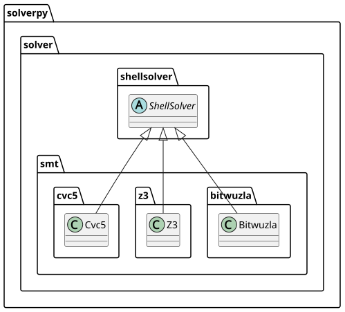

Smt Overview
solverpy.solver.smt
SMT solvers
SMT (Satisfiability Modulo Theories) solvers for the SMT-LIB2 format.

| Solver | Binary | Notes |
|---|---|---|
Cvc5 |
cvc5 |
Leading SMT solver; broad theory support |
Z3 |
z3 |
Microsoft's SMT solver; wide theory coverage |
Bitwuzla |
bitwuzla |
Specialised for bit-vectors and floating point |
Llm2smt |
llm2smt |
QF_EUF solver |
Primo |
primo |
QF_LRA and QF_UF solver |
Opensmt |
opensmt |
SMT solver with interpolation and proofs |
SpassSatt |
SPASS-SATT |
CDCL(LA) solver for QF_LRA/QF_LIA/QF_LIRA |
Yices |
yices-smt2 |
Yices 2; SMT-LIB2 front end of yices |
Bitwuzla
Bases: ShellSolver
The bitwuzla SMT solver for bit-vectors, floating-point, arrays, and
uninterpreted functions.
The strategy (sid) supplies Bitwuzla's command-line options, appended
after the static option -v (verbose, needed for statistics). Verbose
core statistics are parsed by
process; status is
decided by the Smt plugin.
Source code in packages/solverpy/src/solverpy/solver/smt/bitwuzla.py
45 46 47 48 49 50 51 52 53 54 55 56 57 58 59 60 61 62 63 64 65 66 67 68 69 70 71 72 73 74 75 76 77 78 79 80 81 82 83 84 85 86 | |
process(output: str) -> Result
Parse Bitwuzla's verbose core statistics into a result dict.
Source code in packages/solverpy/src/solverpy/solver/smt/bitwuzla.py
82 83 84 85 86 | |
Cvc5
Bases: ShellSolver
The cvc5 SMT solver.
The strategy (sid) supplies cvc5's command-line options, appended after
the static options -Lsmt2 --stats --stats-internal. Statistics matching
CVC5_KEYS are parsed by
process; status is decided by
the Smt plugin, with an
explicit timeout status set when cvc5 reports being interrupted by a
timeout.
Source code in packages/solverpy/src/solverpy/solver/smt/cvc5.py
46 47 48 49 50 51 52 53 54 55 56 57 58 59 60 61 62 63 64 65 66 67 68 69 70 71 72 73 74 75 76 77 78 79 80 81 82 83 84 85 86 87 88 89 90 91 92 93 94 95 96 97 98 99 100 101 102 103 104 105 | |
process(output: str) -> Result
Parse cvc5's --stats output into a result dict.
Source code in packages/solverpy/src/solverpy/solver/smt/cvc5.py
89 90 91 92 93 94 95 96 97 98 99 100 101 102 103 104 105 | |
Llm2smt
Bases: ShellSolver
The llm2smt SMT solver.
The strategy (sid) supplies llm2smt's command-line options, appended
after the static options --quiet --stats, as for
Opensmt. Output statistics are
parsed by
process; status is
decided by the Smt plugin.
Source code in packages/solverpy/src/solverpy/solver/smt/llm2smt.py
23 24 25 26 27 28 29 30 31 32 33 34 35 36 37 38 39 40 41 42 43 44 45 46 47 48 49 50 51 52 53 54 55 56 57 58 59 60 61 | |
process(output: str) -> Result
Parse llm2smt's --stats output into a result dict.
Source code in packages/solverpy/src/solverpy/solver/smt/llm2smt.py
58 59 60 61 | |
Opensmt
Bases: ShellSolver
The opensmt SMT solver.
The strategy (sid) supplies opensmt's command-line options, as for
Primo and
Llm2smt. An empty sid means
opensmt's own defaults.
opensmt has no time or memory limit options of its own, so the limit is
enforced by the shell timeout wrapper and the memory plugin.
Source code in packages/solverpy/src/solverpy/solver/smt/opensmt.py
18 19 20 21 22 23 24 25 26 27 28 29 30 31 32 33 34 35 36 37 38 39 40 41 42 43 44 45 46 47 48 49 50 51 52 53 54 55 56 57 58 59 60 61 62 63 64 65 66 67 68 | |
Primo
Bases: ShellSolver
The primo QF_LRA/QF_UF SMT solver.
The strategy (sid) supplies primo's command-line options, appended after
the static options, as for Llm2smt.
primo has no time or memory limit options of its own, so the limit is
enforced by the shell timeout wrapper and the memory plugin.
Source code in packages/solverpy/src/solverpy/solver/smt/primo.py
82 83 84 85 86 87 88 89 90 91 92 93 94 95 96 97 98 99 100 101 102 103 104 105 106 107 108 109 110 111 112 113 114 115 116 117 118 119 120 121 122 123 124 125 126 | |
SpassSatt
Bases: ShellSolver
The SPASS-SATT CDCL(LA) solver for linear rational and linear
mixed/integer arithmetic (QF_LRA, QF_LIA, QF_LIRA).
The strategy (sid) supplies SPASS-SATT's command-line options, as for
Opensmt. An empty sid means
SPASS-SATT's own defaults.
SPASS-SATT has no time or memory limit options of its own, so the limit
is enforced by the shell timeout wrapper and the memory plugin. It also
reads only from a file argument, not stdin.
Source code in packages/solverpy/src/solverpy/solver/smt/spasssatt.py
18 19 20 21 22 23 24 25 26 27 28 29 30 31 32 33 34 35 36 37 38 39 40 41 42 43 44 45 46 47 48 49 50 51 52 53 54 55 56 57 58 59 60 61 62 63 | |
Yices
Bases: ShellSolver
The yices-smt2 SMT solver (Yices 2).
The strategy (sid) supplies yices' command-line options, appended after
the static options, as for Primo.
yices does have a --timeout=<seconds> option, but it is deliberately
unused, so the limit is left to the shell timeout wrapper as for
Primo. On its own timeout yices
answers unknown and exits 0, which at the default verbosity is
indistinguishable from a genuine unknown -- the (check-sat:
interrupted) marker appears only at -v 2, which also floods the output
with a line per restart. unknown counts as a failure and not as a
timeout for Smt, so such a
result would never be recomputed at a longer cutoff. Letting timeout
kill yices instead yields exit code 124 and the correct TIMEOUT status,
at the cost of the statistics of runs that time out.
yices has no memory limit option either; that is the memory plugin's job.
Source code in packages/solverpy/src/solverpy/solver/smt/yices.py
33 34 35 36 37 38 39 40 41 42 43 44 45 46 47 48 49 50 51 52 53 54 55 56 57 58 59 60 61 62 63 64 65 66 67 68 69 70 71 72 73 74 75 76 77 78 79 80 81 82 83 84 85 86 87 | |
Z3
Bases: StdinSolver
The z3 SMT solver.
A StdinSolver: the strategy
(sid) is SMT-LIB2 fed on stdin along with the problem instance, after
the static options -smt2 -st. If the strategy contains a
check-sat-using command, it replaces the instance's own check-sat.
Output is parsed by
process; status is decided by the
Smt plugin, with an explicit
memout status set on an "out of memory" error.
Source code in packages/solverpy/src/solverpy/solver/smt/z3.py
47 48 49 50 51 52 53 54 55 56 57 58 59 60 61 62 63 64 65 66 67 68 69 70 71 72 73 74 75 76 77 78 79 80 81 82 83 84 85 86 87 88 89 90 91 92 93 94 95 96 97 98 99 100 101 102 103 104 105 106 107 108 109 110 111 112 113 | |
process(output: str) -> Result
Parse z3's -st statistics into a result dict; sets memout on out-of-memory.
Source code in packages/solverpy/src/solverpy/solver/smt/z3.py
89 90 91 92 93 94 95 | |